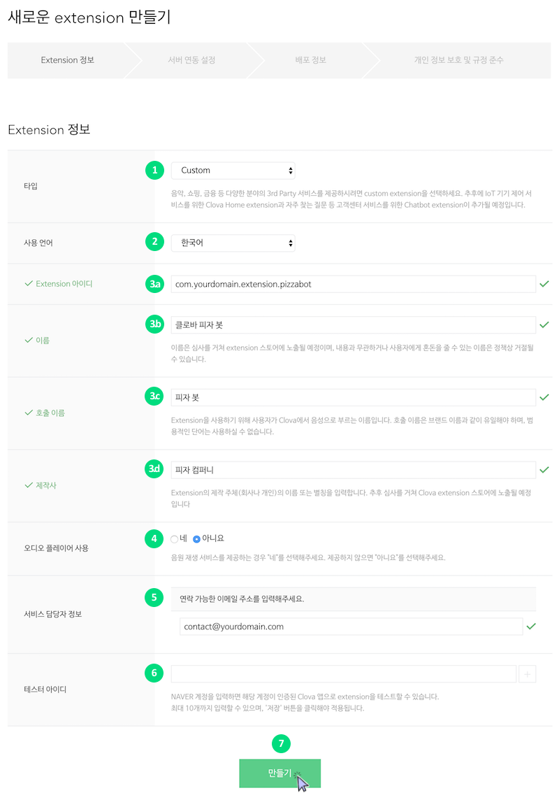
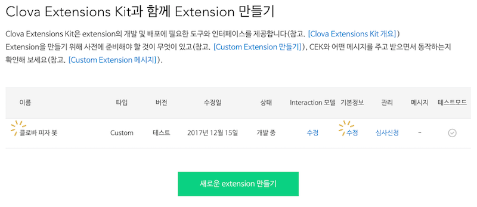

Extension 등록하기
Custom extension 또는 Clova Home extension을 개발 중이거나 개발한 경우 이를 Clova developer console에 등록해야 합니다. CEK 메뉴 페이지에서 페이지 하단에 있는 새로운 익스텐션 만들기 버튼을 클릭하면 신규 extension을 등록할 수 있습니다.

Extension을 등록할 때 일반적으로 다음 항목을 순차적으로 수행해야 합니다.
Extension 기본 정보 입력
Extension을 등록하는 과정에서 가장 먼저 할 일은 등록할 extension의 기본 정보를 입력하는 것입니다. Extension의 기본 정보는 Clova developer console에 extension을 생성하기 위한 필수이자 최소 정보입니다. Extension의 기본 정보를 입력하고 나면 CEK 메뉴에서 생성한 extension을 언제든지 접근 또는 수정할 수 있게 됩니다.
다음 절차에 따라 extension을 등록합니다.

- 타입 항목에서 등록할 extension의 타입을 선택합니다. Extension 타입을 선택하면 그에 해당하는 입력 필드가 추가로 나타납니다.
- 사용 언어 항목에서 extension에서 사용할 언어를 선택합니다. 현재 한국어만 지원하고 있습니다.
- Extension의 ID, 이름, 호출 이름에 해당하는 정보를 다음 항목에 입력합니다.
- 익스텐션 아이디: Extension의 고유 ID입니다. Reversed FQDN 형식으로 입력합니다. (예: com.yourdomain.extension.weathernotifier)
- 이름: Extension의 이름입니다. 추후 Clova extension 스토어에 노출됩니다.
- 호출 이름: 사용자가 extension을 호출할 때 부르는 이름입니다. 범용적인 단어는 사용할 수 없습니다.
- (Extension이 AudioPlayer 지시 메시지를 이용할 경우)오디오 플레이어 사용 항목을 네로 선택합니다. Extension이 음악 스트리밍 서비스를 제공할 때 사용됩니다.
- Extension 기본 정보를 모두 입력한 후 만들기 버튼을 클릭합니다.
Extension 기본 정보 입력이 끝나면 생성된 Extension의 정보를 수정하는 화면으로 전환됩니다. 이때부터 페이지 하단에 있는 저장 버튼을 클릭하여 중간 내용을 언제든지 저장할 수 있으며, 다음과 같이 CEK 메뉴에서 등록된 Extension 목록을 확인할 수 있습니다.

서버 연동 설정
Extension은 CEK와 HTTPS 통신을 수행하게 되니다. 이때, CEK는 Extension쪽으로 HTTP 요청를 보내고, Extension은 HTTP 응답을 CEK에게 보냅니다. CEK가 extension으로 HTTP 요청을 보내려면 Clova developer console에서 서버 연동 설정을 수행해야 합니다. Extension 기본 정보를 입력한 후 생성된 extension에 대해 서버 연동 설정을 수행할 수 있습니다.
다음 절차에 따라 서버 연동 설정을 수행합니다.

- Extension 정보 입력 UI에서 위쪽에 있는 서버 연동 설정 탭을 클릭합니다.
- Extension의 서버 URL(endpoint) 정보를 서비스 서버 URL 항목에 입력합니다.
- (Extension이 제공하는 서비스의 사용자 계정과 Clova의 사용자 계정 간에 연결이 필요한 경우 계정 연결 여부 항목을 네로 선택합니다. 계정 연결에 대한 자세한 설명은 계정 연결 설정을 참조합니다.
- SSL 인증 항목의 라디오 버튼을 클릭합니다. Extension을 제공하는 서버는 반드시 공인된 인증 기관의 인증서를 사용해야 합니다. (Self-signed 인증서 사용 불가)
- 서버 연동 설정과 관련된 내용을 입력한 후 저장 버튼을 클릭합니다.
계정 연결 설정
Extension으로 제공하려는 서비스의 사용자 계정이 Clova의 사용자 계정과 연결이 필요한 경우 서버 연동 설정 중에 계정 연결(account linking)에 관련된 정보를 입력해야 합니다.
다음 절차에 따라 계정 연결 설정에 필요한 정보를 입력합니다.
- 계정 연결 여부 항목에서 네를 선택합니다.
- 사용자가 계정 인증을 할 수 있도록 UI를 제공하는 Authorization URL을 로그인 URL 항목에 입력합니다. 사용자가 extension을 활성화하면 이 페이지로 이동됩니다.
- 사용자 계정 인증 시 HTTPS 요청에 필요한 클라이언트 ID를 입력합니다. 클라이언트 ID는 인증 서버를 구축할 때 생성한 값입니다.
- 개인 정보 정책 URL 항목에 extension이 제공하는 서비스의 개인 정보 보호 정책과 관련된 내용이 제공되는 페이지의 URL을 입력합니다. 이 페이지의 내용은 추후 스토어에 노출됩니다.
- (만약, 로그인 URL이나 개인 정보 정책 URL에서 제공하는 페이지가 입력된 도메인 이외의 도메인에서 필요한 자원을 가져오는 경우) 도메인 리스트 항목에 필요한 도메인을 추가합니다.
- (만약, 사용자 계정 연결 시 발급되는 access token의 사용 범위(scope)를 미리 정의한 경우) 사용 범위 항목에 미리 정의한 범위를 추가합니다.
- 액세스 토큰 URI 항목에 서비스의 access token을 획득할 수 있는 URL을 입력합니다. 현재 허가 승인 타입(grant type)은 code grant 방식만 지원하고 있습니다.
- 서비스의 access token을 획득 시 HTTPS 요청에 필요한 클라이언트 Secret을 입력합니다. 클라이언트 secret는 인증 서버를 구축할 때 생성한 값입니다.
- 클라이언트 증명 스킴은 다음 중 인증 서버의 인터페이스 구현에 맞는 값을 설정합니다.
- HTTP Basic (Recommended): 서비스 access token을 획득하기 위해 인증 정보(Credentials)를 헤더에 입력받는 경우
- Credentials in request body: 서비스 access token을 획득하기 위해 인증 정보를 본문(body)에 입력받는 경우


Note!
계정 인증 후 이동할 클라이언트가 URL(redirect URL)은 https://prod-ni-cic.clova.ai/v1/al/token/이며, 리다이렉트 URL 항목에서 확인할 수 있습니다.